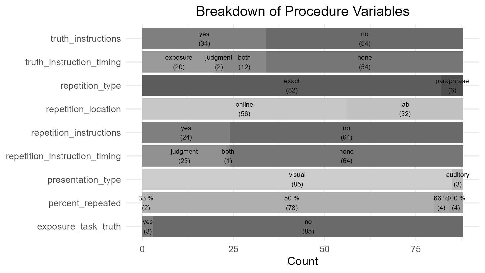
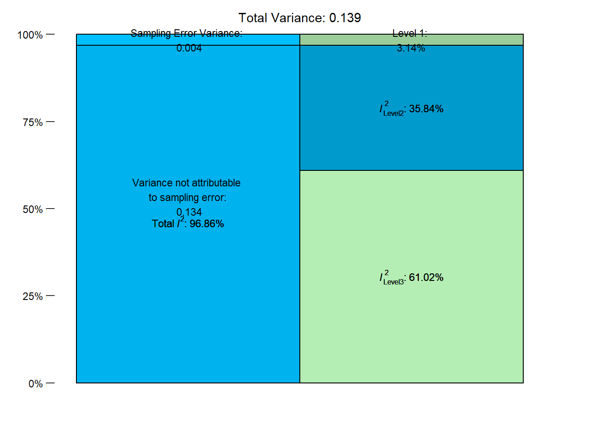

An overview of TED
The following overview and analysis are a living version of the analysis conducted in TED’s introductory paper. They will be updated as new data is included and may thus deviate from the published results. On this page, you can find an overview of included data, a brief meta-analysis on the truth effect within TED, and additional models estimating variability in the truth effect on subject, statement, or experiment level.
In the current version of TED, we included 56 studies from 27 publications, spanning 12002 participants contributing 778741 trials. A complete list of the included publications can be found in the Table “overview of studies included in TED”.
Sample composition ranged from 29 to 949 participants. On average, studies included 218.04 participants (\(\mu_{age} =\) 33.17,\(\sigma_{age} =\) 7.22). An overview of the rating scale usage for truth judgments and the use of a filler task over all included studies can be found in the figure below.
On average, studies employed 62.90 (\(SD =\) 39.97) statements per participant in the judgment session and in 88.64 % of procedure settings exactly 50% of statements were repeated. Of 88 judgment phases, 75.00 % were conducted on the same day as the exposure phase. The average delay between exposure and judgment phase if both were conducted on the same day was 3.77 minutes. The average delay between exposure and judgment phase, given the judgment phase was conducted at least one day after the exposure phase, was 7.45 days. An overview of additional variables pertaining to the procedure of the included studies can be found in the Figure below.

Detailed information on the statements presented is available for 53 out of 56 studies. Data on the accuracy of a statement is available for 359113 (52.41 %) of trials, the exact statement text is available for 306387 (44.72 %) of trials, and response times are available for 111077 (16.21 %) of trials.
| publication_id | study_id | procedure_id | n_participants | student_sample | truth_rating_steps | repetition_time | n_statements |
|---|---|---|---|---|---|---|---|
| 1 | 1 | 1 | 186 | NA | 2 | 5 | 56 |
| 2 | 2 | 2 | 138 | NA | 2 | 0 | 36 |
| 2 | 2 | 3 | 138 | NA | 2 | 10080 | 36 |
| 3 | 3 | 4 | 103 | 0 | 6 | 0 | 120 |
| 3 | 4 | 5 | 99 | 1 | 2 | 0 | 200 |
| 3 | 5 | 6 | 68 | 1 | 6 | 0 | 200 |
| 3 | 6 | 7 | 89 | 1 | 6 | 2880 | 200 |
| 4 | 7 | 8 | 380 | 0 | 2 | 0 | 40 |
| 5 | 8 | 9 | 283 | 0 | 6 | 0 | 40 |
| 5 | 9 | 10 | 271 | 1 | 6 | 0 | 40 |
| 5 | 10 | 11 | 200 | 0 | 6 | 0 | 40 |
| 5 | 11 | 12 | 299 | 0 | 6 | 0 | 40 |
| 5 | 12 | 13 | 291 | 0 | 6 | 0 | 40 |
| 6 | 13 | 14 | 113 | 1 | 6 | 1 | 40 |
| 6 | 13 | 15 | 113 | 1 | 6 | 1 | 40 |
| 6 | 13 | 16 | 113 | 1 | 6 | 1 | 40 |
| 6 | 13 | 17 | 113 | 1 | 6 | 1 | 40 |
| 6 | 13 | 18 | 113 | 1 | 6 | 1 | 40 |
| 6 | 14 | 19 | 430 | 0 | 6 | 1 | 40 |
| 6 | 14 | 20 | 430 | 0 | 6 | 1 | 40 |
| 6 | 14 | 21 | 430 | 0 | 6 | 1 | 40 |
| 6 | 14 | 22 | 430 | 0 | 6 | 1 | 40 |
| 6 | 14 | 23 | 430 | 0 | 6 | 1 | 40 |
| 7 | 15 | 24 | 371 | 0 | 11 | 10080 | 12 |
| 7 | 16 | 25 | 939 | 0 | 11 | 1 | 12 |
| 7 | 16 | 26 | 939 | 0 | 11 | 10080 | 12 |
| 7 | 17 | 27 | 408 | 0 | 11 | 10080 | 12 |
| 8 | 18 | 28 | 503 | 0 | 2 | 0 | 80 |
| 9 | 19 | 29 | 82 | 1 | 6 | 4 | 120 |
| 9 | 20 | 30 | 68 | 1 | 6 | 4 | 120 |
| 10 | 21 | 31 | 507 | 0 | 7 | 0 | 32 |
| 10 | 21 | 32 | 507 | 0 | 7 | 1440 | 32 |
| 10 | 21 | 33 | 507 | 0 | 7 | 10080 | 32 |
| 10 | 21 | 34 | 507 | 0 | 7 | 43200 | 32 |
| 11 | 22 | 35 | 220 | 1 | 6 | 5760 | 72 |
| 11 | 22 | 36 | 220 | 1 | 6 | 5760 | 72 |
| 11 | 23 | 37 | 282 | 0 | 6 | 20 | 72 |
| 11 | 23 | 38 | 282 | 0 | 6 | 20 | 72 |
| 11 | 23 | 39 | 282 | 0 | 6 | 20 | 72 |
| 11 | 24 | 40 | 405 | 0 | 6 | 20 | 72 |
| 11 | 24 | 41 | 405 | 0 | 6 | 20 | 72 |
| 12 | 25 | 42 | 240 | 0 | 101 | 0 | 16 |
| 13 | 26 | 44 | 60 | 0 | 6 | 5 | 80 |
| 14 | 27 | 45 | 526 | 0 | 6 | 0 | 105 |
| 15 | 28 | 47 | 54 | 1 | 6 | 10 | 88 |
| 16 | 29 | 48 | 139 | 0 | 5 | 10 | 20 |
| 17 | 30 | 49 | 267 | 0 | 5 | 10 | 20 |
| 18 | 32 | 53 | 66 | 1 | 6 | 10 | 88 |
| 18 | 32 | 54 | 66 | 1 | 6 | 10 | 88 |
| 19 | 33 | 55 | 65 | 1 | 6 | 10080 | 88 |
| 19 | 33 | 56 | 65 | 1 | 6 | 10080 | 88 |
| 19 | 33 | 57 | 65 | 1 | 6 | 10080 | 88 |
| 19 | 33 | 58 | 65 | 1 | 6 | 10080 | 88 |
| 19 | 34 | 59 | 202 | 0 | 6 | 0 | 80 |
| 19 | 34 | 60 | 202 | 0 | 6 | 0 | 80 |
| 20 | 35 | 61 | 73 | 0 | 6 | 3 | 56 |
| 20 | 36 | 62 | 79 | 1 | 2 | 0 | 56 |
| 20 | 36 | 63 | 79 | 1 | 2 | 20160 | 56 |
| 21 | 37 | 64 | 91 | 1 | 6 | 2 | 60 |
| 21 | 38 | 65 | 64 | 1 | 6 | 0 | 60 |
| 21 | 39 | 66 | 80 | 1 | 6 | 0 | 54 |
| 22 | 40 | 69 | 70 | 1 | 2 | 5 | 80 |
| 22 | 40 | 70 | 70 | 1 | 2 | 5 | 80 |
| 22 | 41 | 73 | 149 | 1 | 2 | 5 | 120 |
| 22 | 41 | 74 | 149 | 1 | 2 | 5 | 120 |
| 22 | 42 | 75 | 98 | 1 | 2 | 0 | 32 |
| 22 | 42 | 76 | 98 | 1 | 2 | 0 | 32 |
| 22 | 42 | 77 | 98 | 1 | 2 | 0 | 32 |
| 22 | 42 | 78 | 98 | 1 | 2 | 0 | 32 |
| 23 | 43 | 79 | 64 | 1 | 6 | 10080 | 84 |
| 23 | 43 | 80 | 64 | 1 | 6 | 10080 | 84 |
| 23 | 44 | 81 | 64 | 1 | 6 | 10080 | 84 |
| 23 | 45 | 82 | 65 | 1 | 2 | 10080 | 80 |
| 24 | 46 | 83 | 89 | 1 | 6 | 5760 | 72 |
| 25 | 47 | 84 | 409 | 0 | 6 | 2 | 28 |
| 25 | 48 | 85 | 949 | 0 | 4 | 1 | 24 |
| 25 | 48 | 86 | 949 | 0 | 4 | 1 | 24 |
| 25 | 49 | 87 | 940 | 0 | 4 | 2 | 16 |
| 25 | 49 | 88 | 940 | 0 | 4 | 2 | 16 |
| 25 | 49 | 89 | 940 | 0 | 4 | 10080 | 24 |
| 25 | 49 | 90 | 940 | 0 | 4 | 10080 | 24 |
| 26 | 50 | 91 | 29 | 1 | 2 | 9 | 120 |
| 26 | 51 | 92 | 41 | 1 | 101 | 9 | 120 |
| 26 | 52 | 93 | 42 | 1 | 101 | 9 | 120 |
| 26 | 53 | 94 | 37 | 1 | 101 | 9 | 80 |
| 27 | 54 | 95 | 132 | 0 | 6 | 0 | 56 |
| 27 | 55 | 96 | 102 | 0 | 6 | 0 | 48 |
| 27 | 56 | 97 | 104 | 1 | 6 | 1 | 56 |
| a A note goes here. |
Meta-Analysis
The following provides an illustrative meta-analysis of effect sizes derived from the TED Truth Effect database. It is based on trial-level data and demonstrates how a meta-analysis could be conducted. This example is not a definitive guide, nor does TED represent a comprehensive or random sample of all studies, since it only includes studies with openly available trial-level data.
Here, we included only studies with a heterogeneous presentation criterion (“between-items criterion”; Dechene et al., 2010). Effect sizes were calculated using Hedges’ g, derived as follows:
- For each subject within a study, the repeated and new average responses were calculated.
- Hedges’ g was computed per study using the
effsize::cohen.d()function with the paired correction. - Variances of the effect sizes were extracted to serve as input for the meta-analysis.
- The meta-analysis accounts for multiple entries per publication (as some publications have multiple studies).
Some small deviations from the originally reported effect sizes in the individual studies may exist. But we applied no additional exclusion criteria and tried to exclude (during encoding) all subjects excluded in the original studies.
First, we access the database and retrieve trial-level data:
library(acdcquery)
# Replace with your local path
conn <- connect_to_db("path/to/ted.db")
analysis_data <- query_db(
conn,
arguments,
target_vars = c("default", "study_id", "publication_id", "authors", "conducted"),
target_table = "observation_table"
) %>%
filter(phase == "test") %>%
filter(!is.na(repeated), !is.na(response))
# Here we only use data where the test phase has both
# repeated and new statements
has_complete_data <- analysis_data %>%
count(procedure_id, subject, repeated) %>%
count(procedure_id, subject) %>%
mutate(
has_complete_data = ifelse(n == 2, 1, 0)
)
analysis_data <- analysis_data %>%
left_join(
., has_complete_data
) %>%
filter(has_complete_data == 1) Then we compute effect sizes per study using cohen.d.
eff_data <- analysis_data %>%
left_join(publications_overview) %>%
group_by(publication_id, authors, conducted, study_id, repeated, subject) %>%
summarize(
mean_resp = mean(response, na.rm = TRUE)
) %>%
mutate(repeated = factor(
ifelse(repeated > 0, "yes", "no"),
levels = c("yes", "no"))
) %>%
pivot_wider(names_from = repeated, values_from = mean_resp) %>%
group_by(publication_id, authors, conducted, study_id) %>%
nest() %>%
mutate(effsize = map(
data,
~effsize::cohen.d(
.$yes,
.$no,
data = .,
hedges.correction = TRUE,
paired = TRUE
)
)
) %>%
mutate(
estimate = map_dbl(effsize, ~{.$estimate}),
var = map_dbl(effsize, ~{.$var})
)Joining with `by = join_by(publication_id)`
`summarise()` has grouped output by 'publication_id', 'authors', 'conducted',
'study_id', 'repeated'. You can override using the `.groups` argument.Multi-Level Meta-Analysis
To account for non-independence of effect sizes within publications contributing multiple studies, we fitted a three-level meta-analytic model using rma.mv():
Level 1: Sampling variance of individual effect sizes
Level 2: Heterogeneity between studies within the same publication
Level 3: Heterogeneity between publications
eff_data <- eff_data %>%
mutate(label = paste0(authors, " (", conducted, ")"))
res_mv <- rma.mv(yi = estimate,
V = var,
random = ~ 1 | publication_id/study_id, # random intercept per study
slab = label,
data = eff_data,
method = "REML")
summary(res_mv)
Multivariate Meta-Analysis Model (k = 49; method: REML)
logLik Deviance AIC BIC AICc
-17.2796 34.5593 40.5593 46.1729 41.1047
Variance Components:
estim sqrt nlvls fixed factor
sigma^2.1 0.0847 0.2911 26 no publication_id
sigma^2.2 0.0498 0.2231 49 no publication_id/study_id
Test for Heterogeneity:
Q(df = 48) = 1190.4241, p-val < .0001
Model Results:
estimate se zval pval ci.lb ci.ub
0.7022 0.0702 10.0035 <.0001 0.5647 0.8398 ***
---
Signif. codes: 0 '***' 0.001 '**' 0.01 '*' 0.05 '.' 0.1 ' ' 1The results reveal a large effect of repetition (\(d =\) 0.70; 95 % CI = 0.56, 0.84). This is much larger than the effect size found in Dechene et al. (2010) of around \(d = 0.49\) for the between-items criterion. Notably, this analysis is only based on publications with openly available data. Thus, these results are based on a biased smaller sample of k = 26 publications.
Variance Decomposition
We can calculate variance proportions and I² values to quantify the contributions of sampling error, within-publication heterogeneity, and between-publication heterogeneity. This reveals substantial variance both within a publication and between publications, supporting the use of this multi-level approach.
i2 <- var.comp(res_mv)
i2$plotWarning in is.na(x): is.na() applied to non-(list or vector) of type 'language'
Warning in is.na(x): is.na() applied to non-(list or vector) of type 'language'
Warning in is.na(x): is.na() applied to non-(list or vector) of type 'language'
Forest Plot
Finally, a forest plot shows the individual study effect sizes, their confidence intervals, and the overall estimate from the multi-level meta-analysis model.
# forest plot for multi-level model
forest(res_mv,
slab = paste0(eff_data$authors, " (", eff_data$conducted, ") | Study: ", eff_data$study_id),
xlab = "Effect size (Hedges' g)",
refline = 0,
cex = 0.5,
) Summary
This workflow demonstrates how the TED Truth Effect database can be used to:
Compute effect sizes at the trial and study level
Fit multi-level meta-analytic models to account for clustering
Explore variance components and heterogeneity
Visualize results using a forest plot
It is intended as a tutorial example and not a definitive meta-analysis.
Hierachical Bayesian Model
To illustrate the benefits of our large collection of trial-level data, we fitted Bayesian multilevel models predicting truth judgments, with repetition as a fixed effect and random intercepts and slopes at the subject, statement, and procedure levels.
The experimental level is based on data at the level of the procedure_table, as this table contains detailed information about each experimental setup (e.g., proportion of repeated items, presence of warnings, number of sessions) beyond what is available in the broader study_table. Each entry in the study_table corresponds to at least one entry in the procedure_table, but a single study may include several procedures that differ in these settings. For example, the same study may have multiple judgment sessions, modify the percentage of repeated stimuli, or warn some participants about the truth effect. These different procedures will then also receive different procedure identifiers, but the same study identifier.
Thus, the experiment identifier (procedure_id) uniquely captures both the study context and its specific experimental conditions. This modeling approach allows us to estimate the variance in the truth effect at three levels simultaneously: (1) variance due to diverse statements (statement level), (2) variance due to individual differences (subject level), and (3) variance due to common experimental manipulations and study settings (experiment level).
We analyzed the dichotomous and Likert-type response formats separately due to differences in their scale characteristics. Dichotomous responses (e.g., true/false) require logistic models, whereas Likert-type responses (e.g., 1–5 ratings) allow for linear models. All responses were maximum-normalized to the range 0-1 with one representing the maximum possible response indicating a “true” judgment. The repetition status was mean-centered to aid model estimation, a new statement was coded -0.5 and a repeated statement 0.5.
We ran all models using 4 chains with 3000 iterations per chain, 1000 of which were discarded as warmup-samples, leading to a total of 8000 posterior samples. There were no divergent transitions, no \(\hat{R} > 1.05\), and visual inspection confirmed that the chains mixed well. We used weakly informative priors for the intercept, fixed effect, and standard deviations for all models.
\[Intercept \sim Normal(0.5, 0.5)\] \[b \sim Normal(0, 1)\] \[\sigma \sim Gamma(1, 4)\]
Dichotomous Truth Judgments
The analysis was based on 112399 trials nested within 1576 subjects, 997 statements, and 14 experiments.
The table below provides a summary of parameter estimates. As expected, the model indicated a significant fixed effect of repetition (\(b =\) 0.08, \(95\% \ CrI =\) [0.41, 0.75], \(OR =\) 1.79, \(BF_{10} > 1 \times 10^{10}\)). Notably, the standard deviation of the random slope of repetition was highest at the subject level (\(\sigma =\) 0.72, \(95\% \ CrI =\) [0.68, 0.77]), followed by the experiment level (\(\sigma =\) 0.28, \(95\% \ CrI =\) [0.18, 0.44]), and the statement level (\(\sigma =\) 0.13, \(95\% \ CrI =\) [0.03, 0.19]).
| Effect | Grouping | Parameter | Estimate | l_95_CrI | u_95_CrI |
|---|---|---|---|---|---|
| fixed | Intercept | 0.31 | 0.17 | 0.44 | |
| fixed | repeated | 0.58 | 0.41 | 0.75 | |
| random | experiment | Intercept (sd) | 0.20 | 0.11 | 0.32 |
| random | experiment | repeated (sd) | 0.28 | 0.18 | 0.44 |
| random | statement | Intercept (sd) | 0.88 | 0.84 | 0.93 |
| random | statement | repeated (sd) | 0.13 | 0.03 | 0.19 |
| random | subject | Intercept (sd) | 0.69 | 0.66 | 0.72 |
| random | subject | repeated (sd) | 0.72 | 0.68 | 0.77 |
Note. N = 112399; N Experiments = 14; N Subjects = 1576; N Statements = 997; l_95_CrI refers to the lower boundary of the 95% credible interval, u_95_CrI refers to the upper boundary
Scale Truth Judgments
The analysis was based on 572775 trials nested within 8309 subjects, 2872 statements, and 65 experiments.
The table below provides a summary of parameter estimates. As expected, the model indicated a significant fixed effect of repetition (\(b =\) 0.08, \(95\% \ CrI =\) [0.07, 0.10], \(BF_{10} > 1 \times 10^{10}\)). Again, the standard deviation of the random slope of repetition was highest at the subject level (\(\sigma =\) 0.10, \(95\% \ CrI =\) [0.10, 0.10]), followed by the experiment level (\(\sigma =\) 0.07, \(95\% \ CrI =\) [0.05, 0.08]), and the statement level (\(\sigma =\) 0.03, \(95\% \ CrI =\) [0.02, 0.03]).
| Effect | Grouping | Parameter | Estimate | l_95_CrI | u_95_CrI |
|---|---|---|---|---|---|
| fixed | Intercept | 0.54 | 0.52 | 0.56 | |
| fixed | repeated | 0.08 | 0.07 | 0.10 | |
| random | experiment | Intercept (sd) | 0.07 | 0.06 | 0.09 |
| random | experiment | repeated (sd) | 0.07 | 0.05 | 0.08 |
| random | statement | Intercept (sd) | 0.11 | 0.11 | 0.12 |
| random | statement | repeated (sd) | 0.03 | 0.02 | 0.03 |
| random | subject | Intercept (sd) | 0.10 | 0.09 | 0.10 |
| random | subject | repeated (sd) | 0.10 | 0.10 | 0.10 |
Note. N = 587999; N Experiments = 66; N Subjects = 8397; N Statements = 2872; l_95_CrI refers to the lower boundary of the 95% credible interval, u_95_CrI refers to the upper boundary
To further explore the influence of temporal delay between the exposure and judgment phases on inter-individual variability in the repetition effect, we included an interaction between subject and temporal delay (same-day vs. different day) in the random effect structure. The model then estimates two standard distributions for the random effect of repetition on the subject level. We can then investigate whether the difference in the standard deviation of the random effect of repetition on the subject-level is different depending on the temporal delay.
The table below provides a summary of parameter estimates. The standard deviation of the random slope of repetition at the subject level for a same-day judgment phase was \(\sigma_0 =\) 0.11 (\(95\% \ CrI =\) [0.10, 0.11]). The standard deviation for the random slope on a later day judgment phase was \(\sigma_1 =\) 0.08 (\(95\% \ CrI =\) [0.08, 0.09]). The difference in standard deviations in the random effect of repetition at the subject level deviated substantially from zero \(\sigma_0 - \sigma_1 =\) 0.02 (\(95\% \ CrI =\) [0.02, 0.02], \(BF_{10} > 1 \times 10^{10}\)).
| Effect | Grouping | Parameter | Estimate | l_95_CrI | u_95_CrI |
|---|---|---|---|---|---|
| fixed | Intercept | 0.54 | 0.52 | 0.56 | |
| fixed | repeated | 0.08 | 0.07 | 0.10 | |
| random | experiment | Intercept (sd) | 0.07 | 0.06 | 0.09 |
| random | experiment | repeated (sd) | 0.07 | 0.06 | 0.08 |
| random | statement | Intercept (sd) | 0.11 | 0.11 | 0.12 |
| random | statement | repeated (sd) | 0.03 | 0.02 | 0.03 |
| random | subject (same day) | Intercept (sd) | 0.10 | 0.10 | 0.10 |
| random | subject (same day) | repeated (sd) | 0.11 | 0.10 | 0.11 |
| random | subject (later) | Intercept (sd) | 0.08 | 0.08 | 0.08 |
| random | subject (later) | repeated (sd) | 0.08 | 0.08 | 0.09 |
Note. N = 587999; N Experiments = 66; N Subjects = 9592; N Statements = 2872; l_95_CrI refers to the lower boundary of the 95% credible interval, u_95_CrI refers to the upper boundary
Scale for x is already present.
Adding another scale for x, which will replace the existing scale.
Scale for y is already present.
Adding another scale for y, which will replace the existing scale.